클로드 앞의 컨베이어 벨트, 그리고 하루에 하나
영상은 그림 한 장으로 시작해요. 상자가 줄지어 오는 컨베이어 벨트 끝에서 사람이 상자 하나를 집어 클로드 앞에 내려놓아요. 오른쪽 위 '1년 반 전쯤' 표시와 아래 '크래시 하나를 집어 와서' 꼬리표가 붙어 있어요. 펠릭스가 1년 반 전에 일하던 방식이고, 영상 내내 이 그림이 기준점이 돼요.
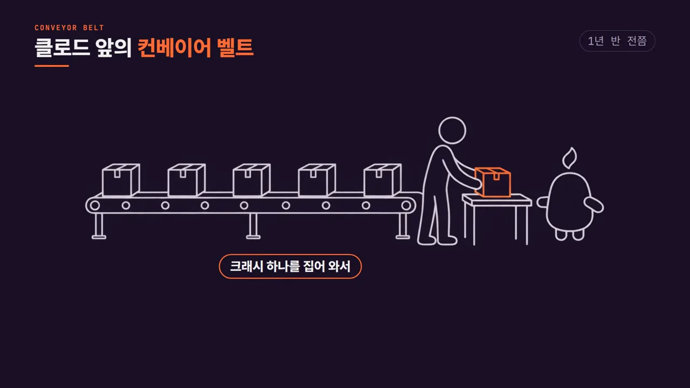
소개 카드는 펠릭스가 앤트로픽에서 클로드 앱·코워크·코드 데스크톱 엔지니어링을 맡고, 전에는 슬랙 데스크톱 앱을 만들었으며, 일렉트론 핵심 메인테이너라고 정리해요. 카드 아래 주황 글씨가 '클로드 코워크 제작 기간 약 1주 반'이에요. 원래 인터뷰 도입부도 그의 팀이 코워크를 약 1주 반 만에 만들었고 그는 이제 코드를 쓰지 않는다고 소개해요.
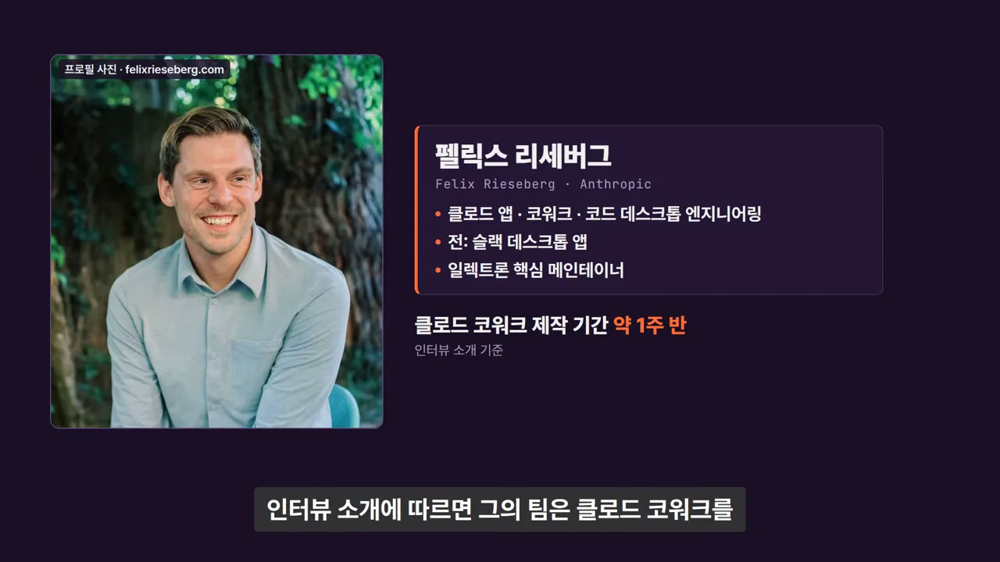
네 가지 질문으로 틀을 잡아요
내레이터는 인터뷰에서 네 가지 전환을 뽑아 표로 세워 둬요. 왼쪽 '2024년식' 칸에는 역할을 씌운다, 작업을 하나씩 집어 준다, 만든 세션이 채점한다, 내가 다 본다가 있고, 오른쪽 '지금' 칸은 물음표로 비어 있어요. 무엇을 주나, 누가 채점하나, 병목이 누구인가를 묻는 표예요. 빈칸은 섹션마다 하나씩 채워지고, 마지막 섹션에서 완성된 표를 다시 볼 수 있어요.
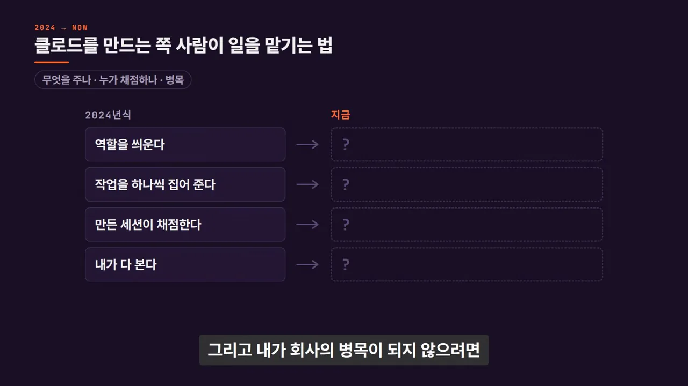
출발점이 되는 일화도 하나 나와요. 원래 인터뷰에서 펠릭스는 프로덕트 매니저 파벨이 NASA(National Aeronautics and Space Administration)의 대량 데이터를 클로드에게 열어 주고 새 행성을 찾아 달라고 했더니 후보가 나왔다고 말해요. 아직 NASA가 확인 중이라 자기도 조심스럽다고 덧붙여요. 그림은 상자를 통째로 여는 사람과 별빛을 가리키는 클로드를 그리고, '천문학자가 아니어도 · 데이터를 통째로 열어 주고 · 우리가 못 본 걸 찾아 줘'라고 적어요. 맨 아래 '인터뷰 내내 반복'은 이 방식이 계속 돌아온다는 예고예요.
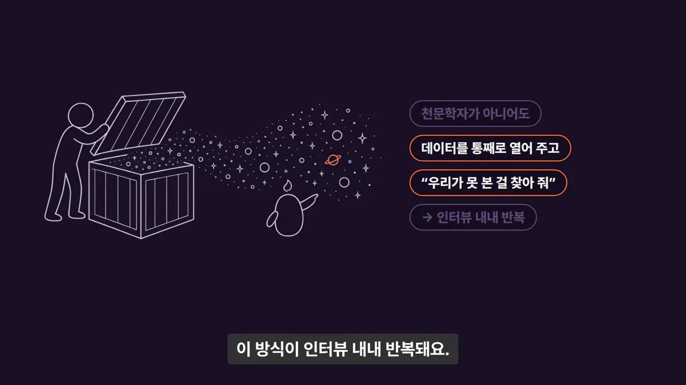
천 개를 만들어도 하루에 하나만 보여 줘요
펠릭스는 요즘 자기가 제품 매니저, 엔지니어링 매니저, 인사 관리자, 데이터 과학자를 섞은 사람이 됐다고 해요. 다른 직군에 도움을 청하는 일이 크게 줄었기 때문이에요. 하루의 대부분은 프로토타이핑이에요. 그 흐름을 그림으로 옮기면 이래요.
flowchart LR A["아이디어를 며칠 묵힌다"] --> B["클로드가 변형을 전부 만든다"] --> C["어느 게 좋은지 비평"] --> D["사람에게 보여 줄 하나"]
예전 엔지니어링 매니저는 만들 수 있는지, 유지보수 비용과 기회비용이 얼마인지부터 따졌어요. 지금은 끝 상태로 바로 건너가 "일단 만들어 봐, 써 보자"가 돼요. 대신 사람의 주의력은 그대로예요. 펠릭스는 진행자에게 천 개는 쉽게 만들어도 보여 줄 수 있는 건 하루에 하나쯤이라고 말해요.
I can easily build a thousand. I can't show you a thousand.
천 개는 쉽게 만들 수 있어요. 천 개를 보여 드릴 수는 없죠.
— 원래 인터뷰 (이 영상 02:57 부근)
그래서 좋은 제품의 기준도 '더 뺄 게 없을 때 완벽하다'는 옛말 쪽이에요. 버튼은 얼마든지 만들 수 있지만 좋은 제품은 버튼이 적어요. 몇 사람 앞에 놓았을 때 금방 이해되고, 전에 못 하던 일을 하게 되는지가 그가 보는 신호예요.
좋은 결과 대신, 최고의 사람이 거치는 과정
진행자는 코딩은 버그가 없으면 되지만, 글처럼 사람의 창의성이 들어간 결과물은 에이전트에게 '좋다'를 어떻게 정의하냐고 물어요. 펠릭스는 이 질문을 결과에서 과정으로 옮겨요. 내레이터의 표에서 첫 줄이 여기서 채워져요. '역할을 씌운다'에 줄이 그어지고 '최고의 사람이 거치는 단계를 밟게 한다'가 들어와요. 계단을 오르는 클로드 그림 옆에 '좋은 결과를 달라'가 지워져 있어요.
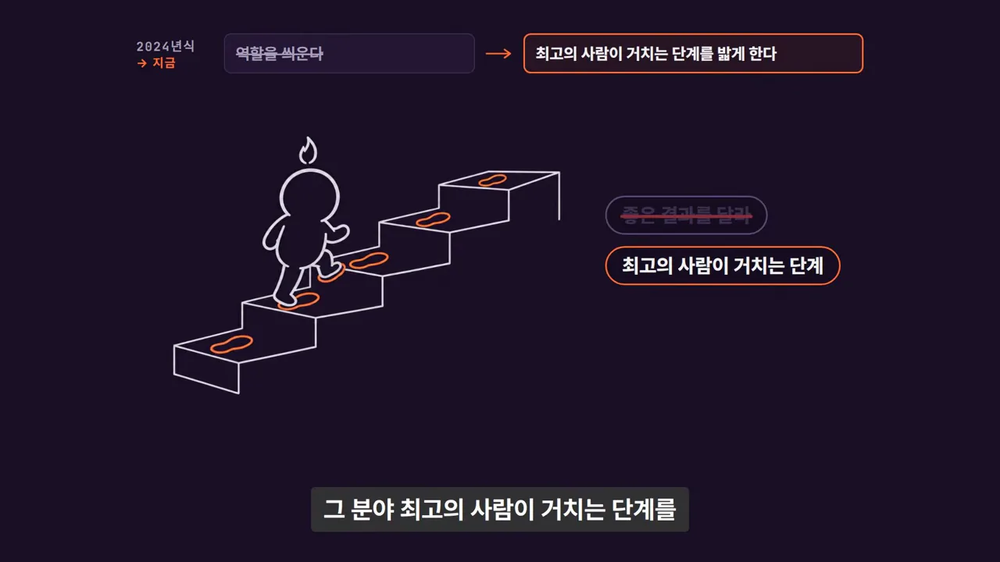
날씨 예시: 찍어서 맞힌 답은 실패예요
펠릭스가 자주 드는 예는 날씨예요. 에이전트에게 바깥 기온을 알아 오라고 했다고 해 봐요. 그림 왼쪽은 주사위와 온도계, 아래 빨간 칸에 '찍어서 맞힌 답 ✗'이에요. 오른쪽은 지도·자료 더미와 온도계, 초록 칸에 '출처 거쳐 0.5도 차이 ✓'예요. 모델이 기온을 찍어서 맞혔다면 통과가 아니라 실패로 봐야 해요. 위치를 제대로 찾고 믿을 만한 출처를 거쳤다면 0.5도쯤 틀려도 그쪽이 더 나은 결과예요.
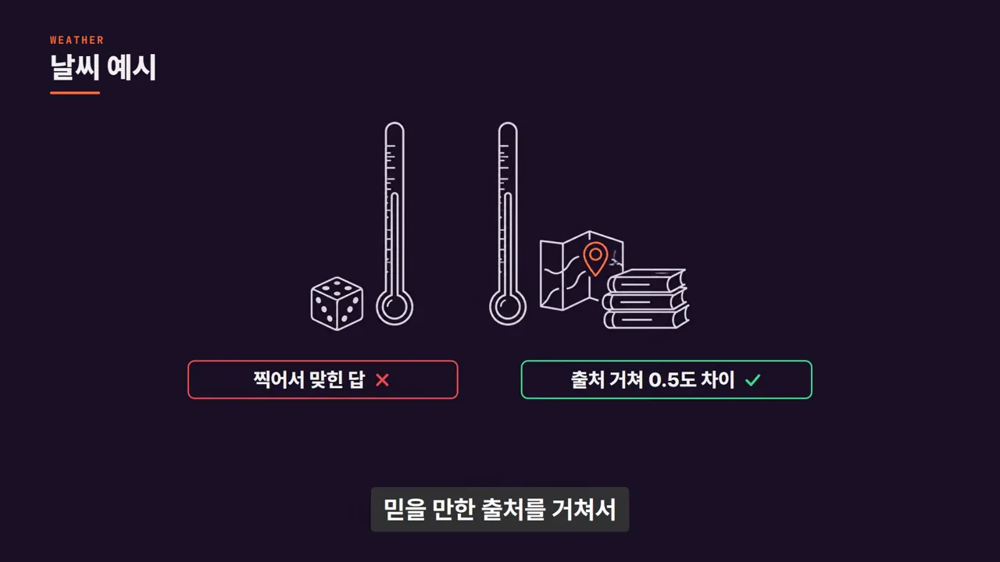
작가들은 손맛이 아니라 과정이라고 말해요
취향이 들어가는 글은 더 어려워요. 펠릭스는 AI(Artificial Intelligence)에 우호적인 뛰어난 작가들과 이야기하는 걸 좋아한다고 해요. 여러 매체에서 전속 기자로 일한 친구 애덤 데이비슨은 이런 프롬프트를 써요.
take my argument and ... magnify it by 100 ... What is the strongest counter argument?
내 주장을 100배로 키워 봐. 가장 강한 반론이 뭐야?
— 원래 인터뷰 (이 영상 05:35 부근)
작가가 아닌 사람의 순진한 접근은 "이 글 좋게 만들어 줘"예요. 펠릭스가 깨달은 건 지식 노동의 비결이 좋은 결과를 달라는 데 있지 않다는 거예요. 그 사이에 한 단계를 끼워요. 이 분야 최고의 사람들은 어떻게 일하는지 묻고, 그 단계를 자동화하는 거예요. 진행자가 그래도 취향은 없지 않냐고 하자, 펠릭스는 좋은 작가 대부분이 자기 글이 타고난 손맛 덕분이라는 데 동의하지 않는다고 답해요. 작가 작업실에 가 보면 화이트보드와 자료가 잔뜩 있고, 결과는 오래 다듬은 과정에서 나온다는 거예요.
블렌더를 쓰라고 하자 애니메이션이 좋아졌어요
펠릭스는 요즘 모션·영상·3D에서 이 변화가 잘 보인다고 해요. 모델 자체도 크게 좋아졌지만, 사람들이 한 더 큰 도약은 클로드에게 전문 애니메이터가 쓰는 블렌더를 쓰라고 한 거예요. 그림에서 '좋은 애니메이션을 가르친다'가 지워지고 '전문 애니메이터의 도구(블렌더) → 결과가 좋아졌다'가 남아요.
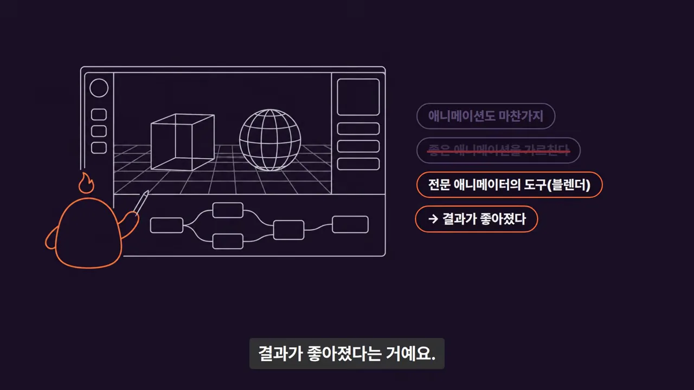
내레이션 슬라이드 하나는 AI를 쓰는 방식을 둘로 나눠요. 왼쪽 '자동화'는 하기 싫거나 바쁜 일을 대신하는 쪽이고 '지금 AI 매출 대부분'이라는 꼬리표가 있어요. 오른쪽 '증강'은 기술이나 지식이 없어도 못 하던 일을 AI 덕분에 하는 쪽이에요. 블렌더를 써 본 적 없는 사람이 3D를 만드는 건 오른쪽에 들어가요.
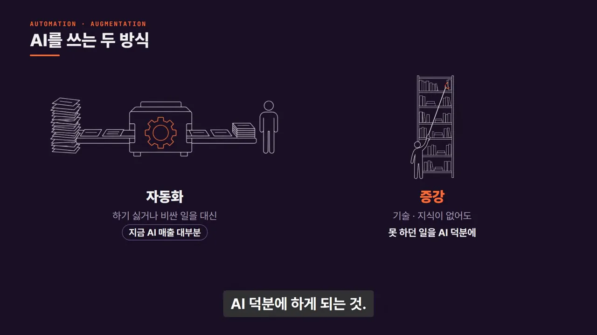
그럴듯한 오답 막기: 적대적 리뷰와 판사 클로드
진행자가 짚는 문제는 이거예요. 내가 전혀 모르는 분야, 예를 들어 별을 찾는 일에서 "천문 연구자처럼 해 줘"라고 시키면, AI가 자신 있게 틀린 걸 내놓아도 나는 알 수 없어요. 내레이션 그림이 이 상황을 그대로 보여 줘요. 차트를 가리키는 클로드 옆에서 사람이 머리를 긁고, 꼬리표는 '내가 모르는 분야라면 · 전문가처럼 하라고 시킨 AI · 그럴듯하게 틀려도 · 알아챌 수 없다'로 이어져요.
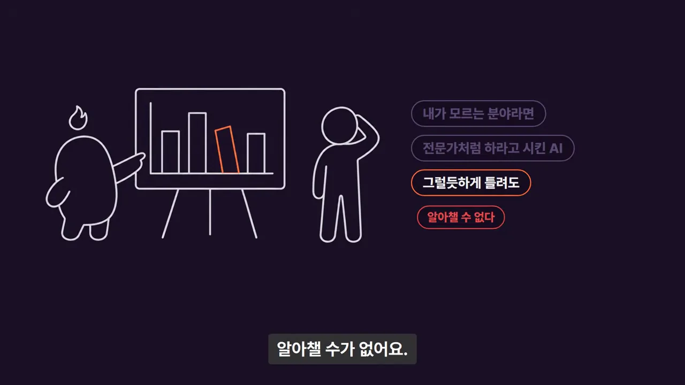
적대적 리뷰: 깨는 게 임무인 클로드들
펠릭스의 실용적인 답은 적대적 리뷰예요. 코딩과 수학 등에서는 효과를 숫자로 보여 줄 수 있을 만큼 검증된 방법이라고 해요. 슬라이드 가운데 문서 한 장을 클로드 여섯이 둘러싸고 있어요. 오른쪽 꼬리표가 핵심을 정리해요. 만든 클로드와 따로, 깨는 게 유일한 임무인 클로드를 여러 개 띄우고, 공매도처럼 약점만 찾게 해요. 마지막 꼬리표 '흠 찾기 < 새로 만들기'는 흠을 찾는 게 만드는 것보다 쉽다는 뜻이에요.
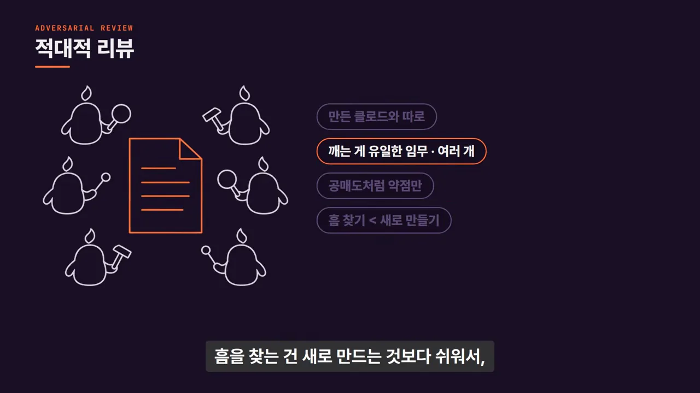
펠릭스는 이걸 본질적으로 레드팀 활동, 혹은 공매도와 같은 개념이라고 설명해요. 같은 모델을 쓰냐는 질문에는 작업에 따라 다르다고 답해요. 대신 지능을 한 단계 낮춰도 결과가 꽤 좋다고 덧붙여요. 실제로 어떻게 시키는지도 보여 줘요. 그는 그날 아침 쓴 블로그 글을 클로드 프로젝트에 넣고 스레드 다섯 개를 띄워, 각각에게 이 글이 틀렸다는 걸 증명하라고 시켜요. 생각 방향이 틀렸다, 사실관계가 틀렸다, 뭔가를 오해했다는 걸 찾는 거예요.
그림 왼쪽은 '펠릭스의 블로그 글 1편' 아래 스레드 1~5가 모두 "내가 틀렸다는 걸 증명하라"를 받은 모습이에요. 오른쪽에는 사람 하나를 둘러싼 말풍선 다섯 개와 '문제는 그다음 — 의견이 다 다르다', '뭘 따를지는 결국 내가 고른다'가 붙어 있어요. 진행자도 인터뷰를 준비할 때 모델 여러 개에게 피드백을 받는데, 다 달라서 결국 직접 골라야 한다는 고민이에요.
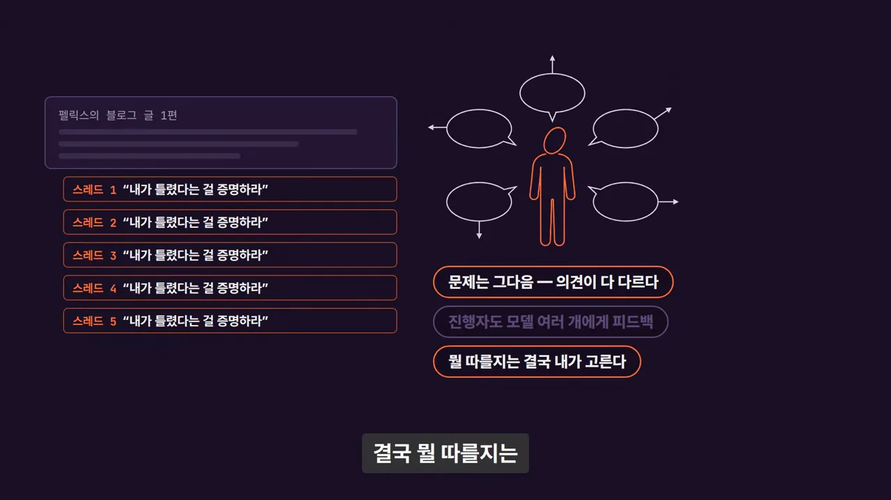
판사 클로드가 비판을 걸러요
펠릭스의 답은 "이번에도 클로드"예요. 코딩에서는 이걸 판사라고 불러요. 공격한 에이전트들의 주요 비판을 또 다른 클로드에게 넘기고, 그 클로드는 각 비판이 타당한지 검증해요. 슬라이드는 이 구조를 세 겹으로 그려요. 왼쪽 '공격 클로드 ×5'가 비판을 내고, 가운데 '판사 클로드'가 타당한 것만 거르고, 오른쪽 '만든 클로드'가 받아들일지 정해요. 화살표 아래 초록 글씨는 '타당한 비판만 도착 · 가려서 받는다'예요.
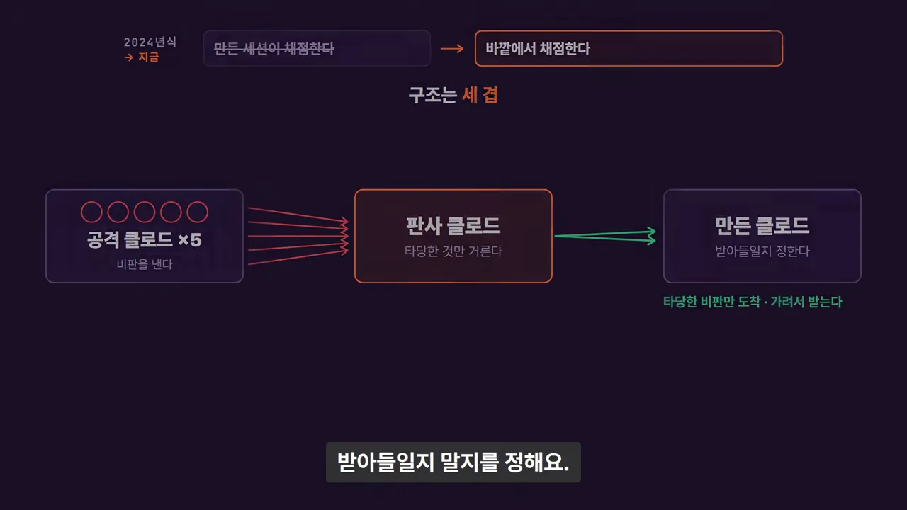
마지막 단계가 중요한 이유도 말해요. 코딩에서도, 펠릭스의 지식 노동 결과물에서도 비판이 그럴듯해 보이지만 요점을 놓쳤거나 실행할 게 없을 때가 있어요. 그는 비판이 그 정도밖에 안 나오면 결과물이 꽤 좋다는 신호로 읽어요.
좋은 게 뭔지 아는지에 따라 두 갈래로 나눠요
이건 결과물이 좋은지 스스로 확신이 없고 쉽게 확인할 수 없을 때의 방법이에요. 반대로 펠릭스는 자기 웹사이트를 3D 에셋으로 새로 만들었는데, 블렌더는 써 본 적도 없어요. 그래도 보기 좋은지, 느낌이 좋은지는 판단할 수 있고, 그걸로 충분하다고 해요. 아래 캡처가 그 웹사이트예요. 책상 위 책 더미와 카세트, 플로피디스크가 3D로 놓여 있어요.
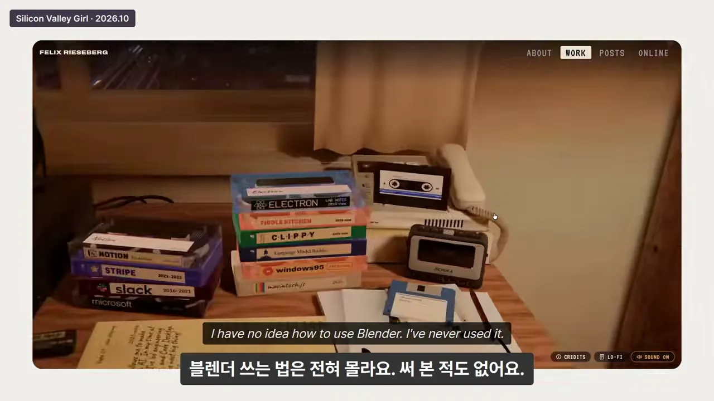
우리는 계약업자, 변호사, 의사에게도 이렇게 해요. 과정을 검증할 방법은 없고 결과에 피드백만 줘요. 그래서 펠릭스는 일을 두 갈래로 나눠요.
| 상황 | 펠릭스의 답 | 영상 속 예 |
|---|---|---|
| 좋은 게 뭔지 전혀 모른다 | AI를 더 써요. 토큰을 더 들여 검증을 늘려요 | 적대적 리뷰 + 판사 |
| 좋은 게 뭔지 안다 | 과정은 몰라도 돼요. 결과만 판단해요 | 블렌더 0번 써 보고 만든 3D 웹사이트 |
내레이션 슬라이드는 갈림길 그림으로 같은 내용을 정리해요. 왼쪽 길에 '좋은 게 뭔지 모른다 → 토큰을 더, 검증을 늘린다', 오른쪽 길에 '좋은 게 뭔지 안다 → 과정은 몰라도 된다'가 붙어 있어요.
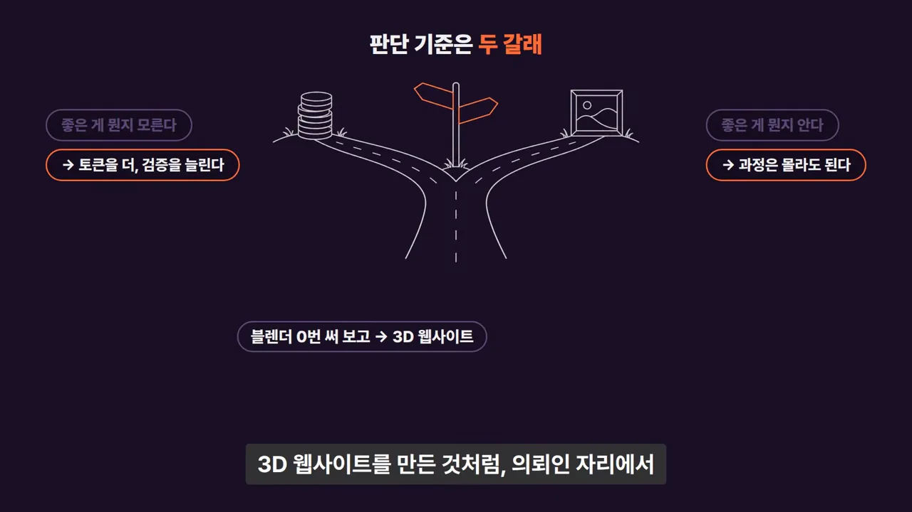
역할 에이전트보다 범용 모델과 도구
진행자가 묻는 건 에이전트를 완전히 믿고 맡기는 지식 노동이 있냐는 거예요. 펠릭스는 바로 팩트 체크를 꼽아요. 슬라이드 덱이나 발표의 모든 숫자에 1차 출처를 찾고, 그게 좋은 1차 출처인지 검증하라고 하면 결과를 100% 믿는다고 해요. 에이전트 50개가 필요한 것도 아니고 하나면 돼요. 특별히 훈련한 팩트 체크 에이전트가 있냐고 묻자, 그냥 클로드 스레드 하나라고 답해요.
우리는 에이전트에 너무 기울어 있어요
여기서 펠릭스가 스스로 '매운 의견'이라 부르는 말이 나와요. 우리가 에이전트라는 개념에 너무 기울어 있다는 거예요. 내레이션은 이걸 시소로 그려요. 한쪽 끝에 상자가 잔뜩 쌓여 아래로 내려앉았고, 아래 글씨가 '에이전트에 너무 기울어 있다'예요.
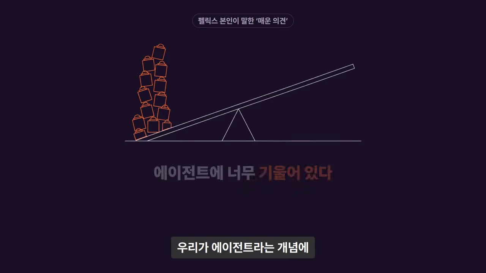
근거는 수학이에요. 펠릭스에 따르면 수학을 처음 진지하게 파고든 회사는 구글 딥마인드였어요. 수학 전용 모델과 하네스를 만들어 국제수학올림피아드에서 당시 최고 성적인 은메달을 땄어요. 그런데 얼마 뒤 주요 범용 모델들이 금메달 수준에 올랐어요. 슬라이드는 '2024 구글 딥마인드 · 수학 전용 시스템 · 은메달 수준'에서 '2025 범용 모델 · 금메달 수준'으로 화살표를 그어요. 아래 꼬리표가 펠릭스의 기억을 바로잡아요. 그는 "4~5개월 뒤"라고 말했지만 실제로는 1년 뒤 대회였어요.
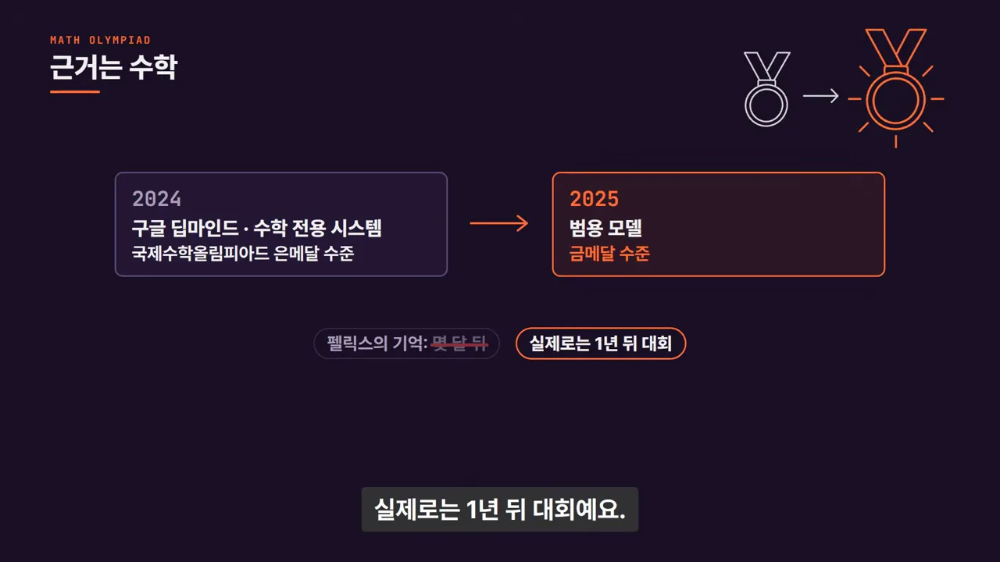
펠릭스는 사람들이 에이전트를 쓰는 이유도 이해한다고 해요. "너는 데이터 과학자야"처럼 모자를 씌우면 AI가 뭘 하는지 사람이 납득하기 쉬워요. 하지만 그 데이터 과학자도 최고 생물학자나 수학자만큼의 지능을 갖고 있어요. 등장인물부터 짜는 순간 오히려 AI 사용을 좁힐 수 있다는 거예요. 슬라이드는 '역할 = 사람이 이해하기 쉬워서', '모델은 원래 만능에 가깝다'를 적고, '데이터를 조각내 나눠 주기'를 지운 뒤 '전체를 도구로 열어 준다'를 남겨요.
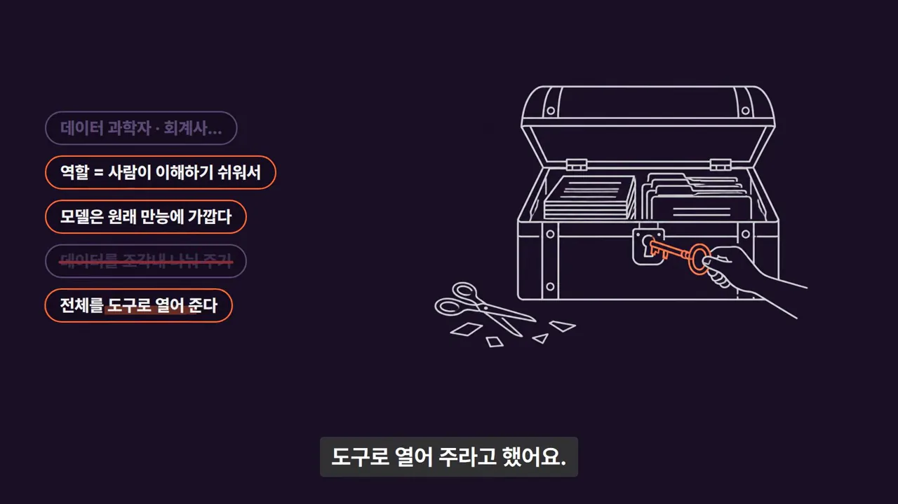
데이터는 조각내지 말고 도구로 열어 줘요
진행자는 그러면 모델이 매 질문마다 고려할 데이터가 너무 많지 않냐고 물어요. 펠릭스는 클로드가 어떤 데이터를 쓸지 꽤 잘 가린다고 답해요. 사람도 일을 잘하려면 사업 전체를 봐야 해요. 엔지니어링 매니저에게 코드 접근만 주면 쓸모가 크게 줄어요. 고객 데이터, 고객 통화, 깊은 사용 데이터, 무엇이 통하는지 보여 주는 사업 데이터까지 있어야 해요. 데이터가 많다는 문제는 도구로 풀어요. 도구 뒤에 어떤 데이터가 있는지 잘 문서화해 두면 모델이 전부 삼키지 않고 필요할 때 그 도구를 불러요.
내레이터는 진행자 팀의 사례를 꺼내요. 게스트 평가용 전용 프로젝트에 과정 설명과 지난 대본을 다 넣어 뒀는데, 노션과 폴더를 열어 주는 게 맞냐는 거예요. 꼬리표는 '잘 되면 그대로', '도구 쓰는 판단력 ↑', '좁 데이터 미리 고르기 → 덜 중요', '그럼 스킬은?'으로 이어져요. 잘 돌아가면 굳이 바꿀 필요는 없지만, 도구를 쓰는 모델의 판단력이 좋아져서 데이터를 미리 골라 주는 일의 중요도는 줄었다는 정리예요.
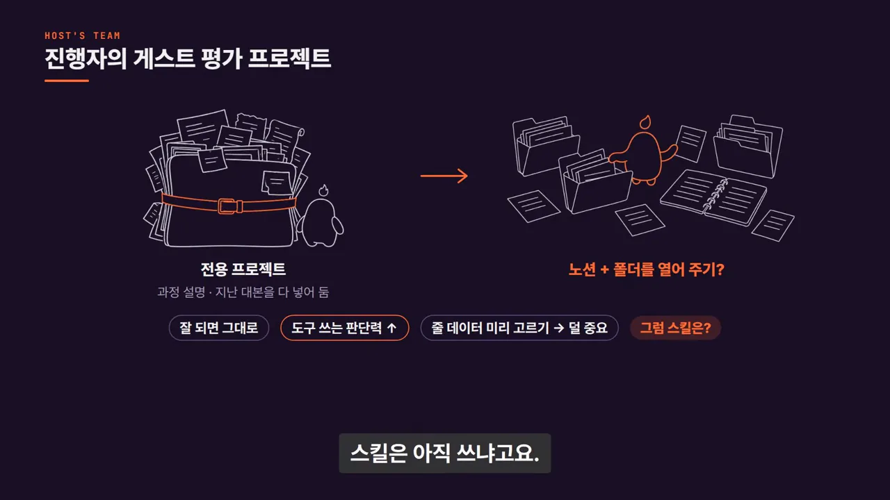
좋은 스킬의 반감기는 짧아요
스킬을 아직 쓰냐는 질문에 펠릭스는 꽤 쓴다고 하면서도, 앤트로픽 공식 가이드와 자기 생각 모두 "스킬은 정말 조심하라"라고 답해요. 우리는 지난 세대 모델에게나 맞던 걸 모델에게 자주 알려 줘요. AI에선 시간이 워낙 압축돼 있어서 좋은 스킬의 반감기가 짧아요. 스킬을 완전히 빼면 결과가 더 좋아지는 경우도 있어요.
슬라이드의 그래프가 이걸 보여 줘요. 가로축은 '지난 세대 모델, 새 모델, 그다음 모델'이고, 주황 곡선이 세대마다 꺾여 내려가며 '옛 지시 = 오히려 방해'라고 적혀 있어요. 위의 초록 점선이 '스킬을 빼 보니 더 좋아짐'이에요. 오른쪽 카드는 진행자가 "그냥 프롬프트하라"는 말의 주인으로 언급한 사람을 클로드 코드를 만든 보리스 체르니로 소개해요.
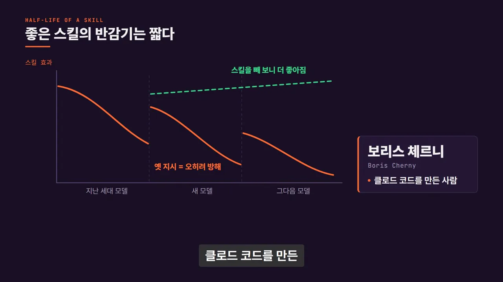
펠릭스는 이 판단이 가장 쓸모 있는 사람은 eval을 갖고 있어서 좋고 나쁨을 가를 수 있는 사람이라고 덧붙여요. 그렇지 않으면 스킬을 뺐을 때 나아졌는지도 알 수 없으니까요.
모델 경험: 내가 클로드라면 뭘 원할까요
펠릭스가 권하는 사고법은 사용자 경험 대신 모델 경험을 생각하는 거예요. 잠깐 내가 클로드라고 상상해 봐요. 주어진 일을 해내려면 뭘 원할까요. 그는 금방 답이 나온다고 해요. 원본 데이터, 컴퓨터, 아마 소프트웨어 설치 권한이에요. 진행자도 누가 이미 생각한 걸 듣지 않고 원본 데이터를 보고 스스로 결정하고 싶을 거라고 맞받아요. 아래 그림은 이 대화를 양쪽으로 나눠 옮긴 거예요.
내레이션 화면도 같은 장면을 그려요. 서류 더미를 밀어내고 컴퓨터 쪽으로 손을 뻗는 클로드 옆에 '사용자 경험처럼'이 있고, '누가 골라 준 요약'은 지워져 있어요.
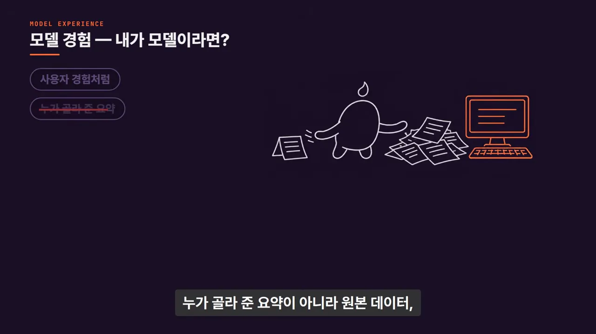
컨베이어 벨트를 그만두다
여기서 첫 그림이 돌아와요. 1년 반 전 펠릭스는 크래시를 발견하면 하나 집어 클로드 앞에 놓고 "이거 고쳐 줘"라고 했어요. 그러다 자기가 클로드를 위한 컨베이어 벨트일 뿐이라는 걸 깨달았어요. 그래서 클로드가 크래시 데이터 전체에 접근하고, 뭘 고치고 뭘 안 고칠지 스스로 정하게 했어요. 그림에서 사람은 벨트에서 떨어져 서 있고, 클로드가 열린 상자들 사이에 앉아 있어요. 표의 둘째 줄이 '작업을 하나씩 집어 준다 → 원본 데이터와 컴퓨터를 열어 준다'로 채워져요.
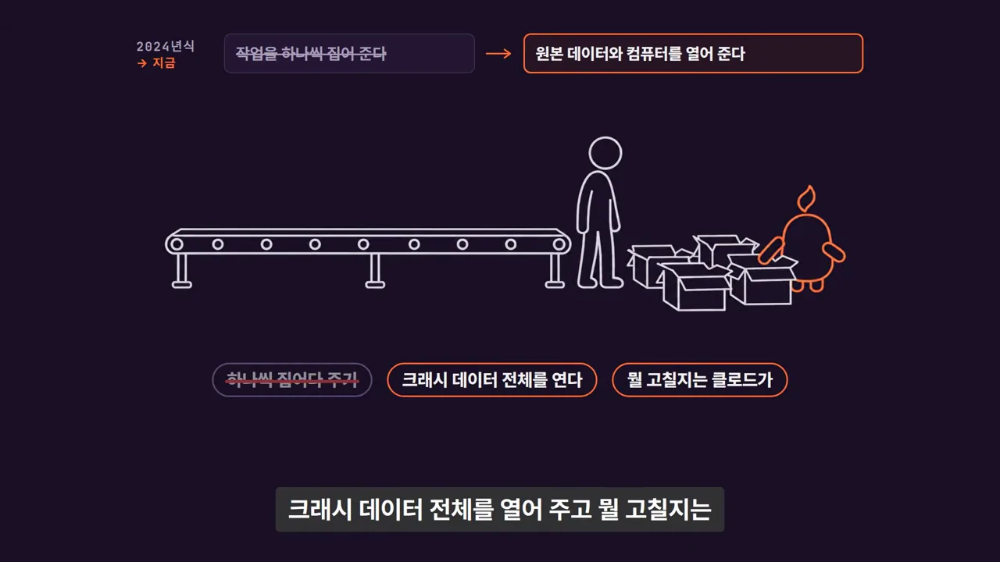
오늘 시작한다면: 데스크톱 앱, 그리고 역할극 대신 도구
그러면 아무 설정 없이 오늘 처음 시작하는 사람은 뭘 하면 될까요. 펠릭스의 첫 단계는 의외로 단순해요. 데스크톱 앱을 내려받는 거예요. 앱에는 내장 브라우저가 있어서, 클로드가 내가 쓰는 시스템에 로그인해 컴퓨터를 조금 쓰게 둘 수 있어요. 커넥터도, 데이터를 내려받는 일도 일단 잊으라고 해요. 키보드를 넘겨주는 거예요.
슬라이드는 이걸 두 칸으로 정리해요. ① '데스크톱 앱 · 내장 브라우저가 있다'에서 ② '키보드를 넘긴다 · 클로드가 브라우저를 직접'으로 화살표가 가요. 아래 꼬리표는 '커넥터·데이터 정리 일단 잊기'와 '잘 되는 작업이 보이면'이에요.
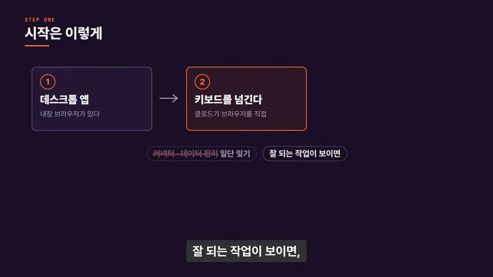
그러다 어떤 도구에서 클로드가 정말 도움이 되는 흐름이 보이면, 그때 묻는 거예요. 클로드가 이 대시보드를 일일이 클릭하는 것보다 나은 걸 줄 수 없을까, 커넥터 같은 것 말이에요. 순서가 거꾸로가 아니라는 게 핵심이에요. 먼저 브라우저로 해 보고, 통하는 일에만 커넥터를 붙여요.
역할이 아니라 일로 나눠요
진행자가 확인해요. 그러면 에이전트라는 건 그냥 대화창이고, 리서치 전담이나 세금 신고 전담 에이전트는 없는 거냐고요. 펠릭스는 프로젝트는 있다고 해요. 일 항목별로는 나누지만 역할별로는 나누지 않아요. 클로드에게 "너는 뛰어난 뭐뭐야"라고 말하지 않아요. 그건 2024년쯤 유행한 방식이에요. "너는 뛰어난 엔지니어야, 여기 문제 좀 고쳐 줘" 같은 거죠.
내레이터는 이게 바로 인터뷰 제목이 말하는 '2024년식'이라고 짚어요. 왼쪽은 2024년의 안경 쓴 클로드가 "너는 뛰어난 엔지니어야"를 듣고 있고, 아래 '역할극 → 말투만 전문가'라고 적혀 있어요. 오른쪽 '지금'은 망치를 든 클로드와 공구 상자, 그리고 "최고의 사람은 어떤 도구를 쓰나?"예요.
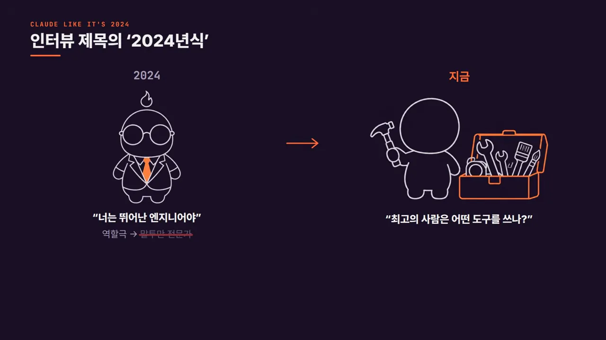
진행자는 그래도 프롬프트에 여전히 "~처럼 행동해"를 쓰지 않냐고 되물어요. 펠릭스는 그 분야 최고의 사람이 어떤 도구를 쓰는지 클로드에게 말해 달라고 하고, 똑같은 걸 쓰라고 한다고 답해요. 지금 모델 대부분에도 남은 문제가 있어서예요. 데이터 과학이나 회계를 예로 들면, "아주 훌륭한 회계사처럼 해"라고 할 때 모델이 약간 역할극을 해요.
I don't need to put on a costume. I actually wanted to talk to me like I'm five, but I wanted to use all the top tools in the field.
의상을 입힐 필요는 없어요. 오히려 다섯 살에게 말하듯 설명하되, 도구는 그 분야 최고의 걸 다 썼으면 해요.
— 원래 인터뷰 (이 영상 22:00 부근)
원하는 건 전문가가 쓰는 기법, 도구, 지식이지 어휘가 아니에요. 말투는 쉽게, 방법은 최고로 가는 거예요.
세션 하나를 믿지 않기: 바깥 채점, 피드백 규칙, 나란히 돌려 보기
진행자가 묻는 건 아직도 에이전트에게 맡기지 않는 일이 있냐는 거예요. 펠릭스는 질문을 살짝 바꿔 답해요. 검증은 얼마든지 겹겹이 더할 수 있으니, 클로드에게 못 맡기는 일보다 세션 하나에 못 맡기는 일이 훨씬 많다는 거예요. 특히 지금 세션이 자기 결과를 판정하게 두는 건 여전히 미덥지 않다고 해요. 클로드 코드든, 코워크든, 채팅이든, 프로젝트든 마찬가지예요.
그림은 이걸 두 장면으로 나눠요. 왼쪽은 클로드가 거울 속 자기에게 채점표를 내미는 '방금 일한 세션이 자기 채점 ✗'이고, 오른쪽은 다른 사람이 차트를 보며 판단하는 '바깥 신호 ✓'예요. 그 아래 작은 글씨가 '급하면 다른 세션'이에요. 위쪽 꼬리표 '클로드 ✓ · 세션 하나는 ✗'가 요점이에요.
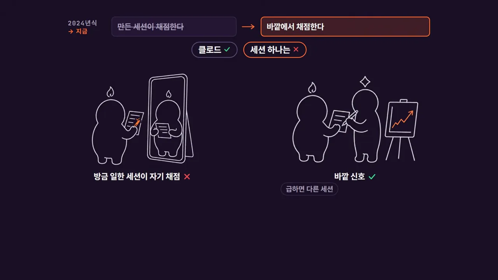
펠릭스가 가장 선호하는 건 무엇이 통하고 무엇이 안 통하는지 보여 주는 단단한 외부 증거예요. 다른 클로드 세션은 급할 때 쓰는 차선책이에요. 때로는 과정을 믿고 시간을 좀 줘야 한다고도 해요. 진행자의 분야라면 조회수와 구독자 수가 그런 외부 지표일 거라고 예를 들어요.
피드백을 규칙으로 바꾸는 3단계
진행자 팀의 고민은 피드백 루프예요. 클로드가 대본을 쓰면 진행자가 고치고, 팀은 클로드 초안이 아닌 고친 버전을 올려요. 70% 정도는 같지만 나머지 30%가 진행자의 취향이에요. 그 피드백은 텔레그램에 있고, 대화를 긁어 오는 봇은 있지만 매번 손으로 클로드를 불러야 해요.
펠릭스는 코딩 쪽 경험을 들려줘요. 어떤 엔지니어가 무엇을 보는지 알듯, 클로드도 깃허브와 슬랙에 흩어진 피드백에서 그걸 꽤 잘 읽어 내요. 도구로 접근만 열어 주면 사람이 피드백 목록을 모을 필요도 없어요. 그 위에서 쓰는 방법이 세 단계예요. 슬라이드 오른쪽 위에 '그대로 따라 할 수 있는 3단계'라고 적혀 있어요.
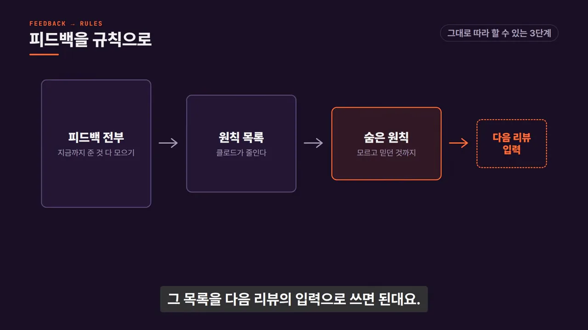
- 지금까지 준 피드백을 전부 모아요 — 도구 접근이 있으면 클로드가 직접 찾아요.
- 클로드에게 원칙 목록으로 줄여 달라고 해요 — 내가 신경 쓰는 규칙과 원칙이에요.
- 한 번 더, 나도 모르게 믿고 있던 원칙을 뽑아요 이 목록이 이후 리뷰의 입력이 돼요
펠릭스는 이 방법이 개별 세션의 피드백을 특화하는 데 꽤 성공적이었다고 해요. 코딩이 아니거나 글이 아닌 일에서는 아직 문제가 더 크지만, 고객 통화 녹취록을 읽고 "그 통화 어땠어?"라고 피드백을 받는 식으로 비슷하게 해 볼 수 있다고 해요. 그 자신도 앤트로픽 채용 면접을 많이 보는데, 전형적인 지식 노동 문제라고 말해요.
블로그의 깊이 프롬프트: 맡기기 전에 네 가지를 물어요
내레이터는 여기서 펠릭스가 인터뷰 영상 공개 일주일쯤 전에 쓴 블로그 글을 꺼내요. 이 글이 '최고의 사람이 쓰는 도구'와 '바깥 채점'을 프롬프트 하나로 묶어 놨다는 거예요. 화면에는 질문 네 개가 차례로 쌓여요. 셋째 줄(방법과 도구)은 주황, 넷째 줄(결과를 보여 줄 것)은 초록 테두리라 앞의 두 조언과 짝이 맞아요.
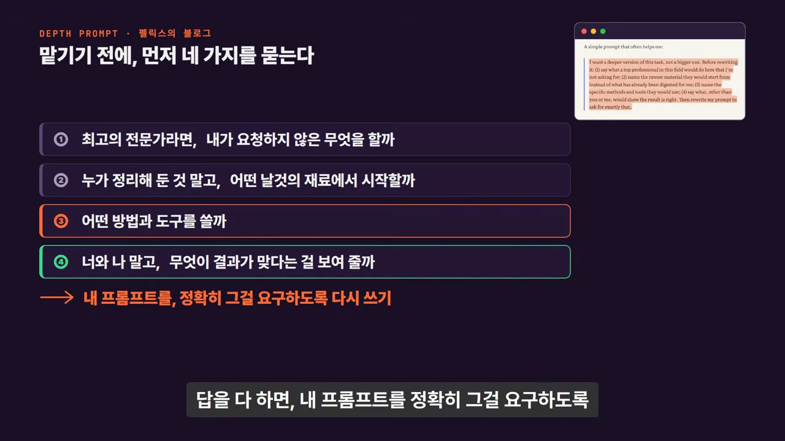
내가 병목이라면, 나란히 돌려 보기
진행자는 100% 믿는 에이전트가 없어서 모든 결과물이 팀을 거쳐 결국 자기를 거친다고 해요. 그래서 회사의 가장 큰 병목이 자기라고요. 펠릭스는 제품이 이미 꽤 잘 해 줄 거라고 자신하면서, 거의 모두에게 권하는 실험을 소개해요. 하루아침에 고삐를 넘기기 싫다면 나란히 돌려 보라는 거예요. 내가 읽고 피드백을 적고, 클로드라면 어떤 피드백을 줬을지 몇 차례 비교해요.
그림이 이 비교를 보여 줘요. 표의 넷째 줄 '내가 다 본다'가 '클로드와 나란히 돌려 본다'로 바뀌고, 아래 '내 피드백'과 '클로드 피드백' 두 칸에 초록(같은 곳)과 주황(다른 곳) 줄이 섞여 있어요. 맨 아래 꼬리표가 '같은 사람도 월요일 ≠ 금요일'이에요.
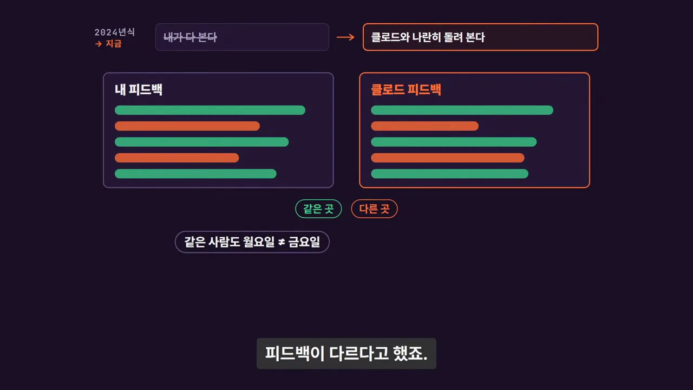
어디가 같고 어디가 다른지가 보이면 워크플로를 다듬을 거리도 생겨요. 진행자가 그럼 팀과 대화하는 이 에이전트는 어떻게 만드냐고 묻자, 펠릭스는 슬랙 안의 클로드인 클로드 태그를 추천해요. 지금 앤트로픽의 핵심 멀티플레이어 경험이라고, 여러 사람이 동시에 클로드와 대화할 수 있다고 해요. 내레이션 화면은 'Introducing Claude Tag' 글과 함께 '올해 6월 베타', '슬랙 채널에서 클로드를 부른다', '여럿이 같은 스레드에서 같이'를 적어요.
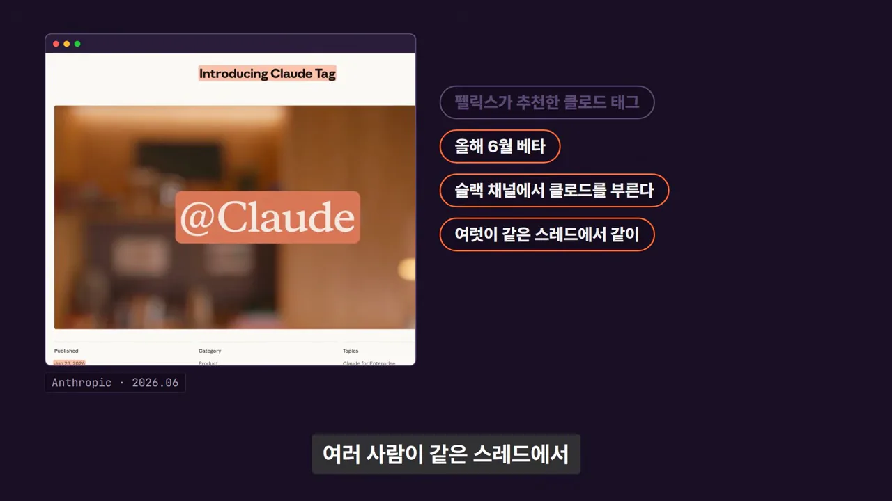
만드는 게 쉬워지면 남는 것: 공감과 야심
대화는 여기서 방향을 틀어요. 슬라이드 제목이 '일을 맡기는 법 → 무엇을 만들 것인가'로 바뀌고, 성벽 같은 원 안의 가게 그림 옆에 '창업자 입장에서 · 뭐가 가치로 남나?'가 붙어요. 진행자가 창업자 입장에서 묻는 거예요. 만드는 게 이렇게 쉬워지면 무엇이 해자로 남느냐고요.
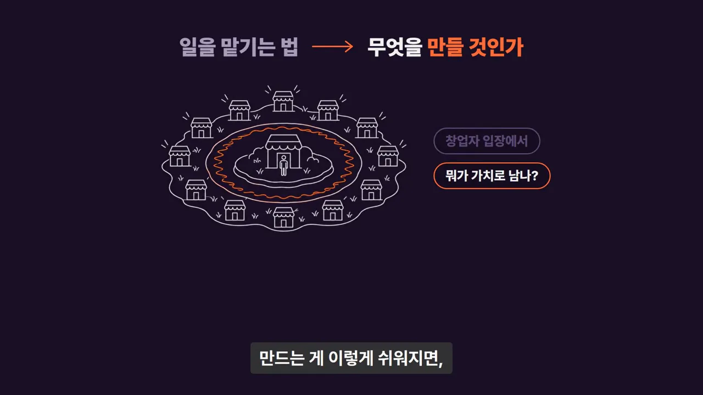
진행자는 2015년 유학 체험 예약 플랫폼을 만들 때 엔지니어를 여럿 고용해 수십만 달러를 썼는데, 지금은 혼자 이틀이면 만든다고 해요. 펠릭스의 '매운 의견'은 생각보다 바뀐 게 없다는 거예요. 초기 자본 비용이 훨씬 컸던 건 맞고, 1~2인 팀이 10억 달러 회사를 만드는 시대에 들어서는 것도 맞아요. 하지만 좋은 제품의 비결은 그대로 공감이에요. 사용자에 대한 공감, 쓰임새에 대한 공감, 결국 돈을 낼 사람에게 정말 가치가 있는지 알아내려는 공감이에요.
그는 이게 늘 창업 팀의 핵심이었다고 봐요. 투자자들 사이에서도 처음 가져온 아이디어는 어차피 바뀌고 창업자가 핵심이라는 게 상식이라고 해요. 한 단계 더 들어가 그게 재능이냐 기술이냐고 묻자, 공감과 실제로 가치 있는 걸 만드는 능력이라고 답해요. 달라진 건 그 공감을 꺼내 실행하기가 훨씬 쉬워졌다는 것뿐이에요.
사라질 건 억지로 쓰던 나쁜 소프트웨어예요
진행자는 바이브 코딩으로 작은 도구를 직접 만드는 사람이 많은데, 한 시간이면 비슷한 걸 만들 수 있다면 왜 돈을 내겠냐고 물어요. 펠릭스는 사라지길 바라는 건 나쁜 소프트웨어라고 해요. 내 쓰임새에 안 맞는데 더 나은 게 없어 마지못해 쓰던 도구들이요. 동시에 좋은 제품을 만드는 건 여전히 어렵다고 해요. 그가 좋아하는 제품 대부분은 자기라면 떠올리지 못했을 것들이에요.
그림은 키보드 달린 휴대폰과 터치 화면 휴대폰을 나란히 그려요. 위에 '키보드가 없으니 바보 같다 · 펠릭스의 블로그 글 · 아이폰이 나왔을 때'라고 적혀 있어요. 펠릭스가 한때 아이폰은 키보드가 없어서 바보 같다는 블로그 글을 썼다는 고백이에요. 아래 꼬리표는 '좋은 제품 = 생각 못 한 방식으로 해결'과, '소프트웨어 전체'가 지워진 '사라질 것: 억지로 쓰던 나쁜 소프트웨어'예요.
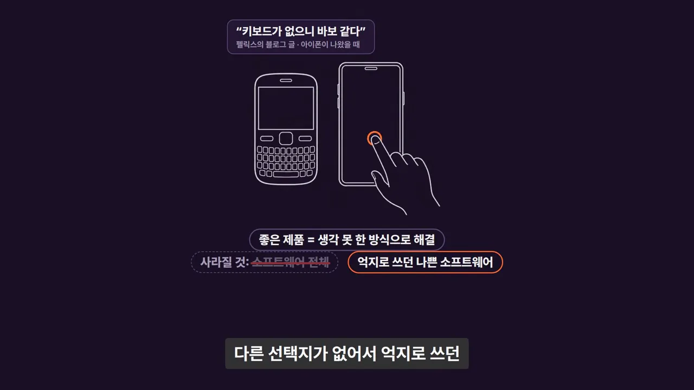
내레이터는 원래 인터뷰에서 펠릭스가 이어서 한 이야기를 요약해요. 공항이나 호텔 체크인 카운터에서 직원에게 화면 좀 보여 달라고 하면, 아직도 검은 화면 단말기를 쓰는 곳이 있고 대부분 아주 불편하다는 거예요. 그림은 카운터 뒤 구식 모니터를 쓰는 직원과 짐을 든 손님이에요.
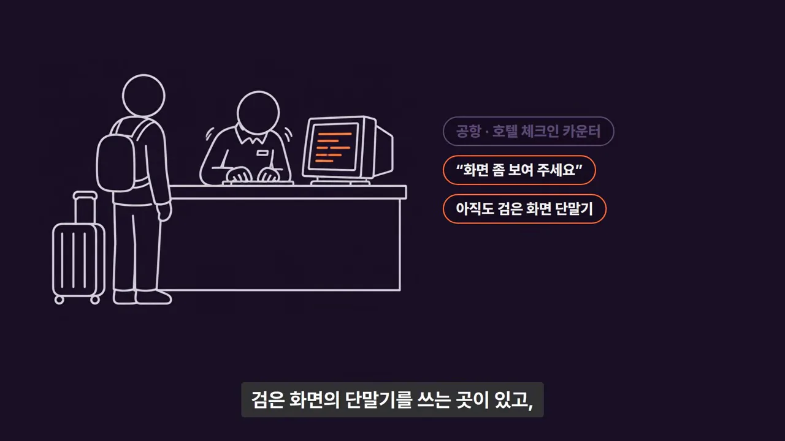
다음 그림은 결론이에요. 실행은 극도로 싸졌으니, 현장에 들어가 무엇이 필요한지 이해하는 능력과 공감·관계가 더 중요해져요. 원래 인터뷰에서 펠릭스는 이걸 'MBA들의 큰 복수'일지 모른다고 농담해요. MBA(Master of Business Administration) 출신들이 소프트웨어 스타트업을 꽤 성공적으로 만들 수 있다는 거예요.
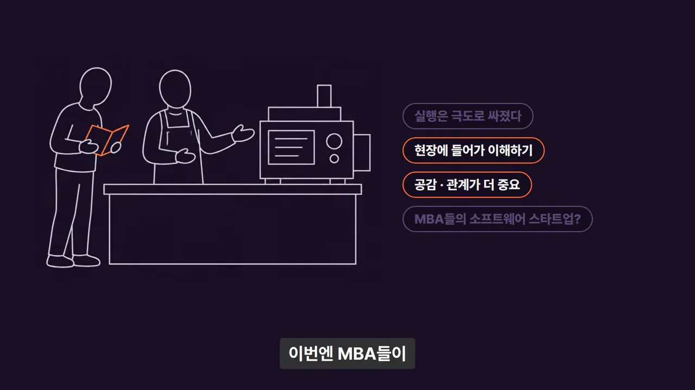
모델은 강한데 응용이 비어 있어요
진행자는 얼마 전 만난 노벨 경제학상 수상자가 모델은 이렇게 강한데 응용 계층이 정말 부족하다고 했다며 동의하냐고 물어요. 펠릭스는 당연히 그렇다며 능력 과잉이 있다고 해요. 놀라운 모델을 앞에 두고 "프랑스 수도가 어디였지?"를 묻는다면 가능한 걸 제대로 못 쓰는 거예요. 앤트로픽 창업자이자 CEO(Chief Executive Officer)인 다리오는 '천재들의 데이터센터'라는 개념을 말하는데, 펠릭스의 일은 그런 데이터센터가 있다고 할 때 사용자가 그걸 실제로 쓰게 만드는 거예요.
그는 이게 새로운 문제가 아니라고 해요. 사람들은 늘 실제로 가능한 것보다 가능하다고 믿는 것에 묶여 왔어요. 그림은 꼭대기에 닿지 못한 채 사다리 중간에 매달린 사람이에요. '이메일 요약만 → 새 지능의 덕 ×' 아래로, '실제로 가능한 만큼'이 지워지고 '가능하다고 믿는 만큼'이 크게 적혀 있어요.
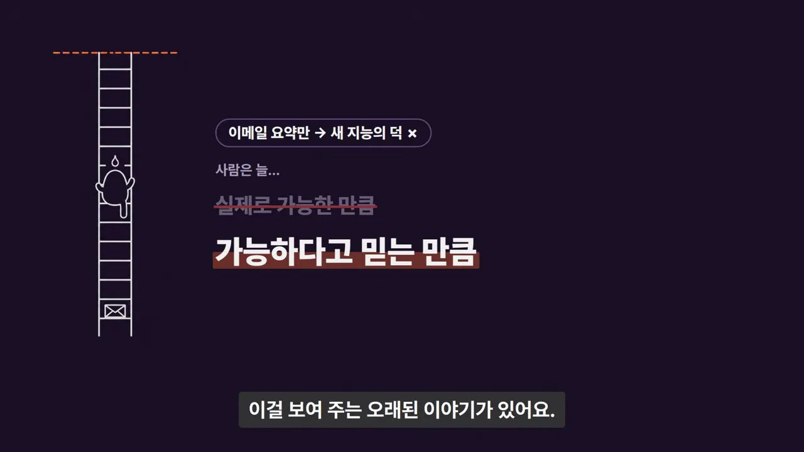
내레이터는 이걸 보여 주는 오래된 이야기를 펠릭스 블로그에서 가져와요. 1939년 버클리의 대학원생 조지 단치히가 통계학 수업에 늦게 들어와 칠판의 문제 두 개를 숙제인 줄 알고 받아 적어 가서 풀어 냈어요. 그건 당시 아직 증명되지 않은 통계 문제 두 개였어요. 펠릭스는 이걸 '가능하다고 믿으면 해낸다'의 예로 들어요.
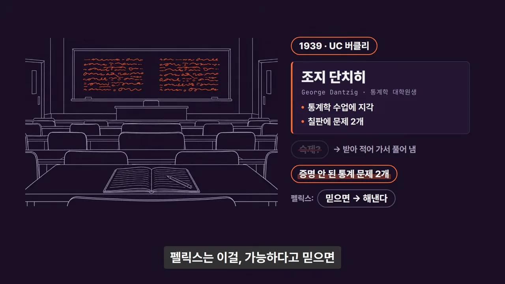
야심의 네 갈래와 분기 실적 보고
그럼 개인은 이 간극을 어떻게 메울까요. 펠릭스는 주말 내내 이걸 생각했다고 해요. X에서 자주 보는 구호는 "더 야심 차게"인데, 그게 뭘 뜻하는지는 상황에 따라 달라요. 그가 바라는 건 가능하다고 믿는 족쇄를 벗고, 왜 이 일을 하는지 다시 생각하는 거예요. 이 일을 하면 다음에 무슨 일이 일어나길 바라는지 묻고, 그 결과를 모델에게 맡기는 거예요. 내레이터는 펠릭스가 바로 이 주제로 쓴 블로그 글을 보여 줘요. 깊이 프롬프트가 나온 그 글이에요.
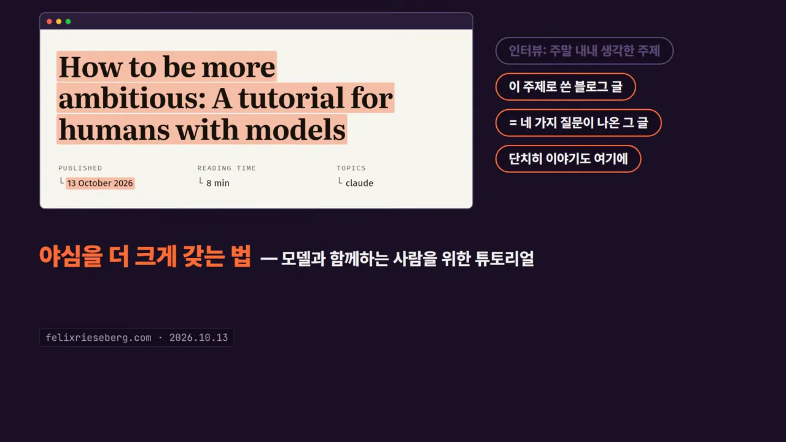
글은 야심을 속도·고도·깊이·범위 네 갈래로 나눠요. 화면에서 '깊이' 아래엔 '네 가지 질문'이, 주황으로 강조한 '고도' 아래엔 '이번 클립'이 적혀 있어요. 앞의 깊이 프롬프트가 깊이였다면, 지금 인터뷰가 말하는 건 고도예요. '왜 하는지 거슬러 올라가기', '기대하는 결과 자체를 맡긴다'예요.
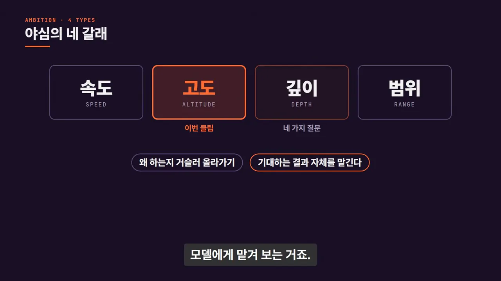
글의 예시는 분기 실적 보고예요. 계단 그림의 층마다 야심이 커져요. 1층은 템플릿 숫자만 바꾸지 말고 데이터를 최대한 넘긴 다음 무엇이 왜 바뀌었는지 묻는 것이에요. 2층은 지금 가장 급한 결정 세 개를 찬반 근거까지 붙여 고르는 것이에요. 3층이 제일 멀리 가요. 보고의 목적은 문제를 일찍 잡고 돈과 사람을 제자리로 옮기는 것이니, 보고 방식 자체를 더 나은 것으로 다시 설계하고, 과거 기록으로 그게 더 빨리 잡아냈을 걸 증명한 다음, 한 분기 동안 지금 방식과 나란히 돌려 보는 거예요.
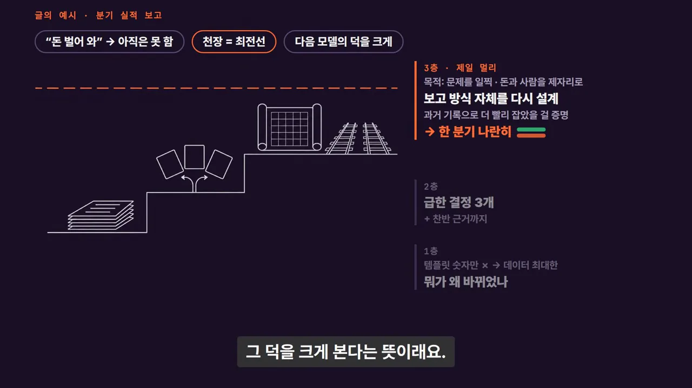
펠릭스도 한계를 인정해요. 대부분의 사업 목적은 돈을 버는 것인데, 클로드에게 "가서 돈 벌어 와"라고 하면 멀리 못 가요. 가장 높은 고도에는 아직 못 갔고 중간쯤이에요. 하지만 그 천장에 부딪힌다면 지금 지능의 최전선에 있다는 뜻이고, 그만큼 덕을 크게 본다고 해요. 반대로 "이 이메일 요약해 줘" 수준에 머물면 새 지능의 혜택을 제대로 못 누려요.
주니어, 시스템을 엮는 능력, 그리고 아이폰 이전 시대
진행자가 일자리 이야기로 넘어가요. 앤트로픽은 아직 주니어 엔지니어를 뽑냐고요. 펠릭스는 지금은 뽑지 않지만, 그건 AI나 능력 때문이 아니라 앤트로픽이라는 회사의 사정 때문이라고 해요. 그는 주니어를 많이 뽑아 온 사람이고, 주니어의 의미가 조금 바뀌고 있다고 봐요. 지금 주니어는 노련한 베테랑보다 훨씬 AI 네이티브예요.
그가 본 주니어 다수는 영향력에 굶주려 있어요. 뭔가를 작동시키는 데 신나 하고, 그걸 위해 모든 길을 파고들어요. 이건 AI 이전부터 그랬지만, 이제 AI 덕분에 훨씬 많은 걸 동시에 시도할 수 있어요. 그래서 아주 작은 팀, 아주 젊은 사람들이 좋은 아이디어를 내고 한꺼번에 실행하는 스타트업이 많이 나올 거라고 기대해요.
임팩트로 평가하고, 진짜를 만들어 증명해요
막 시작하는 소프트웨어 엔지니어에게 줄 조언을 묻자, 펠릭스는 엔지니어가 지금 정체성의 위기에 있다고 해요. 리액트 API(Application Programming Interface)를 통째로 외운 게 내 가치인가 하는 질문이요. 그는 그렇지 않다는 쪽이고, 이 변화를 반겨요. 그는 엔지니어를 늘 임팩트로 평가해 왔어요. 사용자가 이 소프트웨어를 살 만큼 좋아하느냐예요. 사용자가 아무 혜택도 못 느끼는 우아한 엔지니어링에는 늘 별 가치를 두지 않았다고 해요.
3년 뒤에도 쓸모 있으려면 무엇에 집중하냐는 질문에는, 자기 커리어를 시작한 방법과 같다고 답해요. 탄탄한 포트폴리오예요. 이제는 목업이 아닌 진짜를 만드는 게 훨씬 쉬워졌으니, 진짜를 만들어 할 수 있다는 걸, 공감이 있다는 걸, 고객과 대화하고 필요한 것과 아닌 것을 가리는 능력이 있다는 걸 증명하라고 해요. 티켓만 처리하며 "왜"를 많이 묻지 않아도 됐던 고참보다 젊은 사람들이 이 새 방식에 훨씬 빨리 적응하는 걸 본다고도 해요.
그림은 퍼즐 조각 다섯 개를 십자로 맞춰요. 빨간 꼬리표 'API 암기 ↓'와 초록 꼬리표 '여러 시스템 엮기 ↑'가 붙어 있어요. 이제 AI를 시스템 셋에 가리키고 "이 다섯 가지 재료를 한데 섞어 줘"라고 할 수 있으니, 엮는 능력의 가치가 더 커졌다는 거예요.
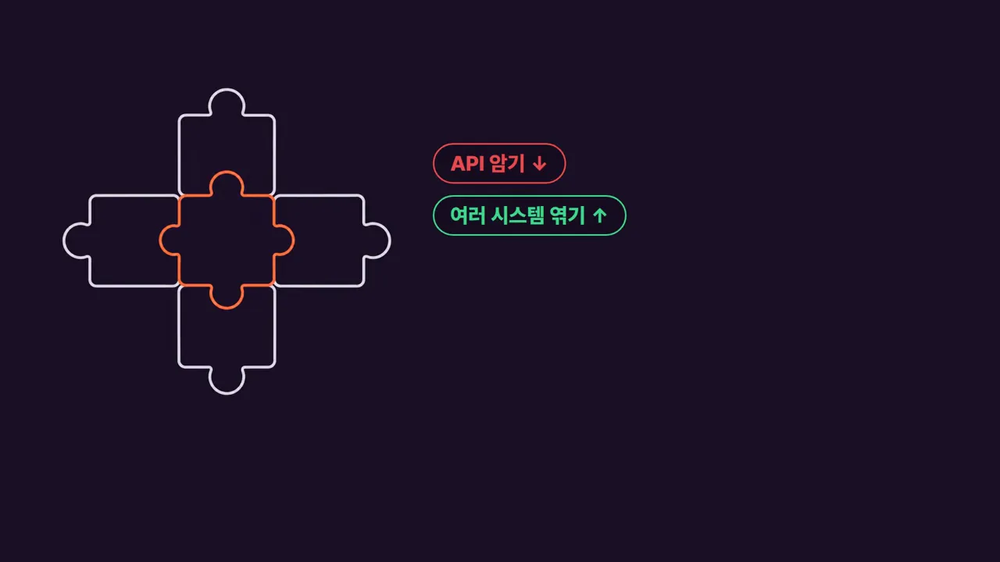
내레이터는 이 영상에 넣지 않은 원래 인터뷰 뒷부분도 짧게 전해요. 펠릭스는 딸에게 회사가 어떻게 돌아가고 사람들이 어떻게 협업하는지 일찍 배우라고 하겠다고 했어요. 인턴십을 여러 번 거친 워털루 대학 출신 인턴과 주니어들이 첫 직장부터 바로 성과를 내는 걸 봤기 때문이에요. 회사가 어떻게 돌아가는지, 아이디어를 어떻게 밀고 자원을 어떻게 얻는지 이미 겪어 봤다는 거예요.
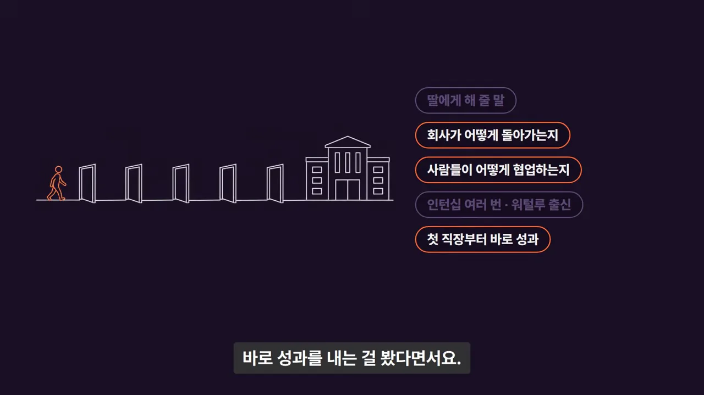
예측 대신 얼마나 틀렸었는지부터
마지막 질문은 5년 뒤 우리 삶이 어떻게 달라지냐예요. 펠릭스는 예측 대신 자기가 얼마나 틀렸었는지부터 말해요. 그림은 점선 직선 위로 휘어 올라가는 주황 곡선과 그걸 올려다보는 사람이에요. 은메달 때 이미 스케일링 법칙을 잘 알았고 지능이 얼마나 빨리 느는지도 알았지만, AI가 풀 수 없다고 여기던 수학 문제를 언제 풀 거냐고 물었다면 2026년 중반이라고는 답하지 못했을 거라고 해요. 누가 1년 반 뒤라고 했다면 무슨 소리냐고 되물었을 거라고요.
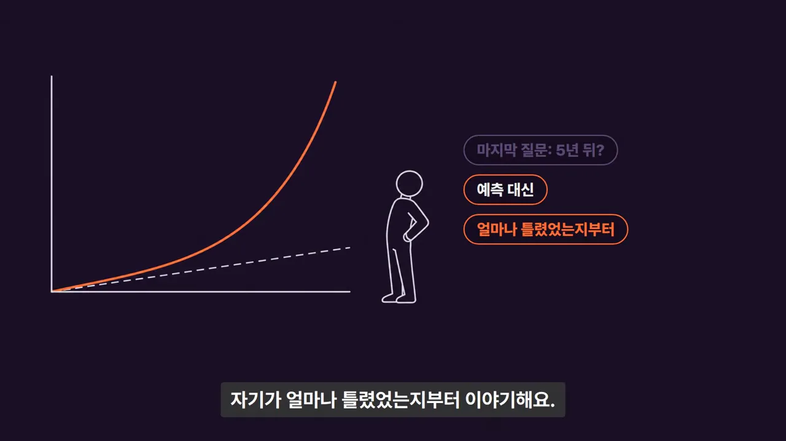
그래도 꽤 확신하는 게 하나 있어요. 지금 쓰는 제품은 모두 완전히 달라질 거예요. AI가 대중화되면서 지금 모습이 최종 형태라고 상상하기 쉽지만, 그는 지금의 AI 제품이 스마트폰이 나오기 직전의 재미있는 휴대폰들과 같은 단계라고 봐요. 그림은 플립폰과 슬라이드폰을 줄 세우고, 맨 끝을 점선 빈칸으로 남겨요.
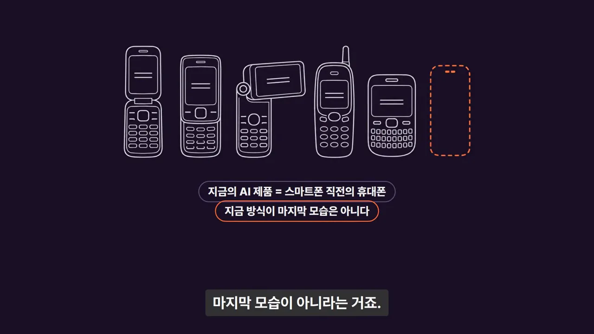
가져갈 건 요령이 아니라 방향이에요
펠릭스는 오늘 한 조언 전부를 10주쯤 지나면 새로 고쳐 써야 할 거라고 말해요. 내레이터는 1주부터 10주까지 칸을 채우고 나침반을 그린 뒤, 그러니 가져갈 건 구체적인 요령보다 방향이라고 정리해요.
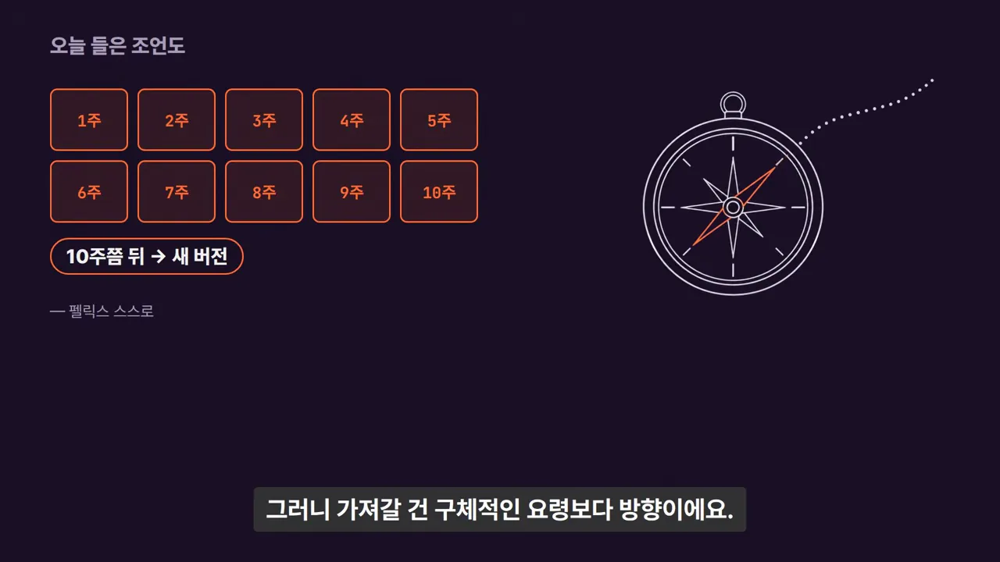
그 방향이 처음 표의 완성본이에요. 영상 첫머리에서 물음표였던 오른쪽 칸이 모두 채워졌어요.
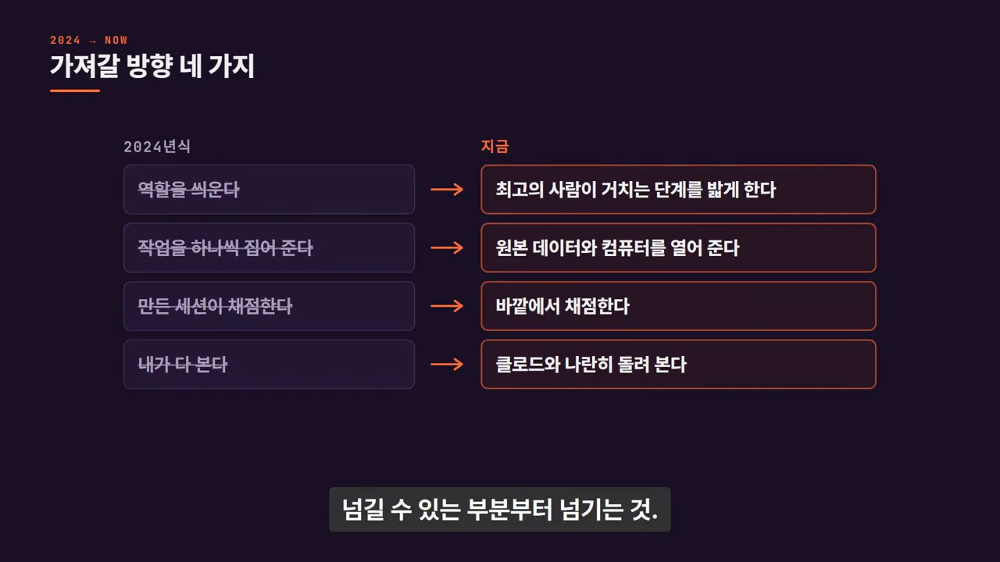
| 2024년식 | 지금 | 이 문서에서 |
|---|---|---|
| 역할을 씌운다 | 최고의 사람이 거치는 단계를 밟게 한다 | 날씨 예시, 블렌더, 역할극 대신 도구 |
| 작업을 하나씩 집어 준다 | 원본 데이터와 컴퓨터를 열어 준다 | 모델 경험, 컨베이어 벨트, 데스크톱 앱 |
| 만든 세션이 채점한다 | 바깥에서 채점한다 | 적대적 리뷰와 판사, 깊이 프롬프트 |
| 내가 다 본다 | 클로드와 나란히 돌려 본다 | 피드백 3단계, 나란히 돌려 보기 |
마지막 그림은 첫 그림인 컨베이어 벨트로 돌아가요. 이번에는 상자 위에 깃발이 꽂혀 있고, '이번 주에 맡길 일 하나 · 작업 → 목표'라고 적혀 있어요. 오늘 해 볼 수 있는 것 하나는, 이번 주 클로드에게 맡길 일 하나를 작업이 아니라 목표로 바꿔 맡겨 보는 거예요.
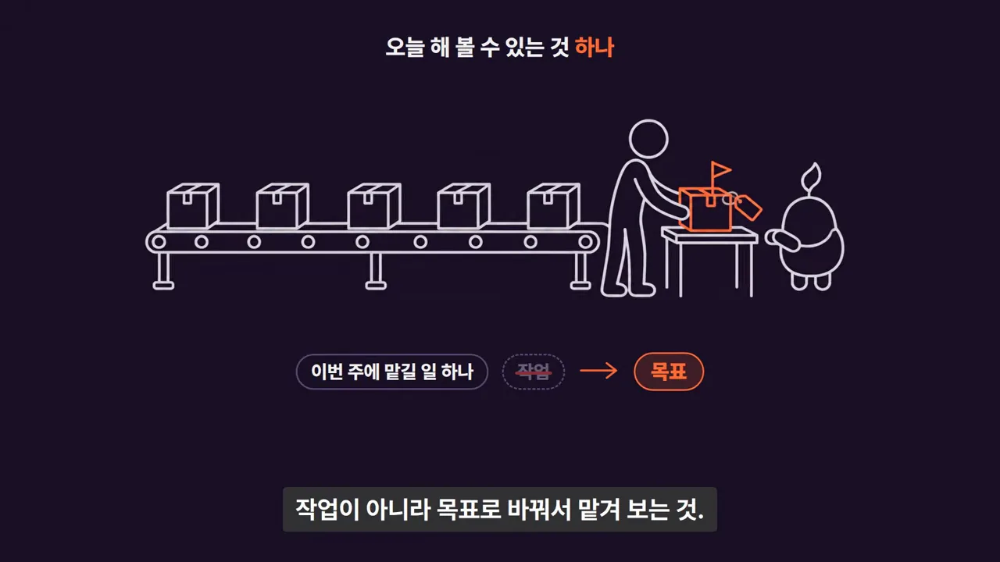